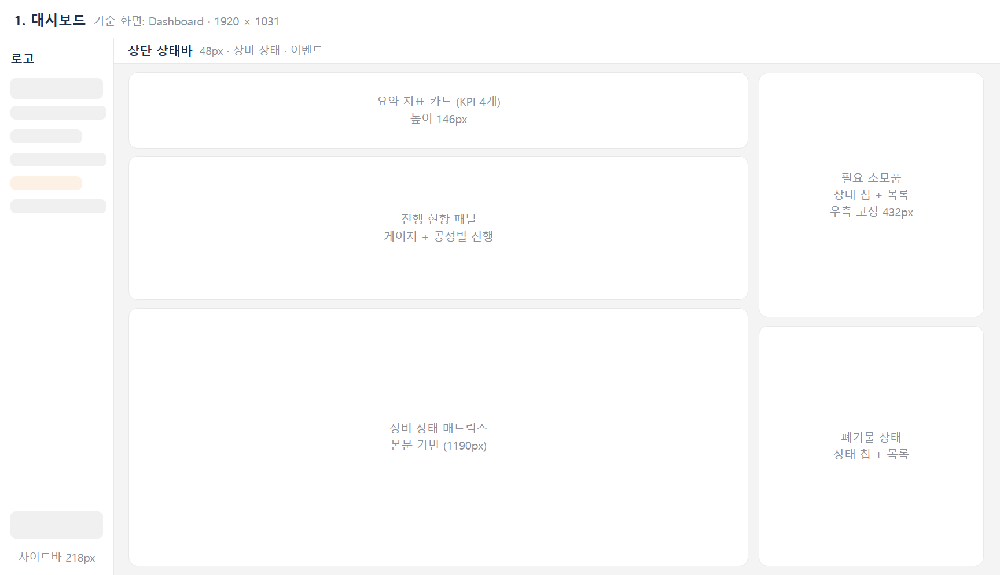

1. 대시보드
기준 화면: Dashboard · 1920 × 1031현황을 한 화면에 요약합니다. 가변 폭 본문 열과 432px 고정 우측 열의 2열 구조입니다. 페이지 제목 없이 바로 카드가 시작합니다.
| 영역 | 크기 | 내용 · 규칙 |
|---|---|---|
| 요약 지표 카드 | 1190 × 146 | KPI 4개 (Orders · Pending · In Progress · Completed) |
| 진행 현황 패널 | 1190 × 276 | 좌측 게이지 + 우측 요약 수치 · 공정별 진행률, [More] |
| 장비 상태 매트릭스 | 1190 × 496 | 모듈 열 반복, 상태 · 도어 · 이벤트 행 |
| 우측 열 (2개 카드) | 432 고정 | 필요 소모품 · 폐기물 상태: 상태 칩(Empty · Low 등) + 목록, [More] |
규칙
- 카드마다 제목 오른쪽에 [More]로 해당 상세 화면으로 이동합니다.
- 경고성 정보(부족 · 가득 참)는 우측 열에 모아 상태 칩으로 강조합니다.